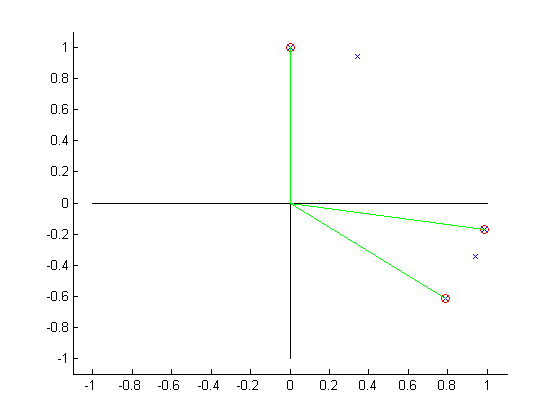
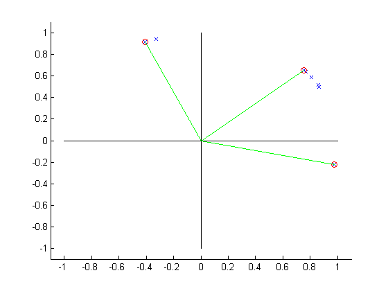
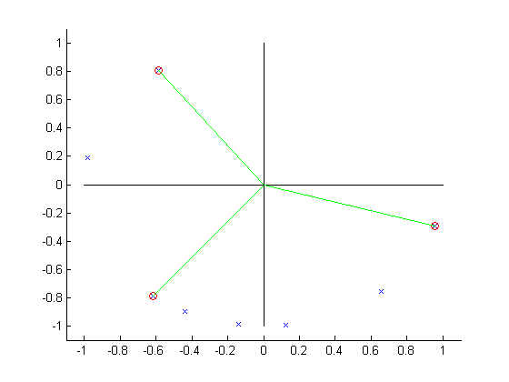
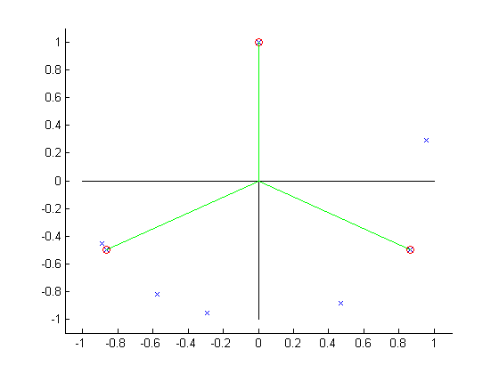

close all
clear all
clc
angleSets = {[70, 350, 90, 340, 322], ...
[40.000000, 31.000000, 109.000000, 347.000000, 30.000000, 114.000000, 36.000000, 41.000000], ...
[126.000000, 244.000000, 311.000000, 232.000000, 262.000000, 277.000000, 169.000000, 343.000000], ...
[298.0, 17.0, 235.0, 207.0, 253.0, 90.0, 210.0, 330.0]};
fprintf('Remember, Matlab starts counting at 1!!!!!!!!!!!\n');
for angSetNum=1:length(angleSets)
angles = angleSets{angSetNum}
desired = 360/3;
objFcn = @(x, y, z) (abs(x-desired)+abs(y-desired) + abs(z-desired))/3;
objFcn = @(x, y, z) ((x-desired)^4 + (y-desired)^4 + (z-desired)^4);
n = length(angles);
best = NaN(1, 3);
bestScore = inf;
for dj = 1:n-2
for dk=1:n-dj
for i=1:n-dj-dk
j = i+dj;
k = j+dk;
a = angles(i);
b = angles(j);
c = angles(k);
aa = a;
bb = b;
cc = c;
if (aa > 180)
aa = aa - 360;
end
if (bb > 180)
bb = bb - 360;
end
if (cc > 180)
cc = cc - 360;
end
d1 = abs(bb - aa);
if (d1 > 180)
d1 = 360-d1;
end
d2 = abs(bb - cc);
if (d2 > 180)
d2 = 360-d2;
end
d3 = abs(aa - cc);
if (d3 > 180)
d3 = 360-d3;
end
score = objFcn(d1,d2,d3);
if (score < bestScore)
bestScore = score;
best = [i, j, k];
end
end
end
end
selected = angles(best);
fprintf('-----------------------\n')
fprintf('Best was %d, %d, %d \n', best(1), best(2), best(3));
fprintf('\t %0.2f, %0.2f, %0.2f\n', selected(1), selected(2), selected(3));
fprintf('\t with score = %0.2f\n', bestScore);
aa = selected(1);
bb = selected(2);
cc = selected(3);
if (aa > 180)
aa = aa - 360;
end
if (bb > 180)
bb = bb - 360;
end
if (cc > 180)
cc = cc - 360;
end
d1 = abs(bb - aa);
if (d1 > 180)
d1 = 360-d1;
end
d2 = abs(bb - cc);
if (d2 > 180)
d2 = 360-d2;
end
d3 = abs(aa - cc);
if (d3 > 180)
d3 = 360-d3;
end
score = objFcn(d1,d2,d3);
fprintf('\t %0.2f, %0.2f, %0.2f, score=%0.2f\n', d1, d2, d3, score);
pointsX = cosd(angles);
pointsY = sind(angles);
figure();
hold on;
plot(pointsX, pointsY, 'X')
plot([-1, 1], [0, 0], 'k-');
plot([0, 0], [-1, 1], 'k-');
xlim([-1.1, 1.1]);
ylim([-1.1, 1.1]);
plot(pointsX(best), pointsY(best), 'ro');
for i=1:3
plot([0, pointsX(best(i))], [0, pointsY(best(i))], 'g-');
end
end
Remember, Matlab starts counting at 1!!!!!!!!!!!
angles =
70 350 90 340 322
-----------------------
Best was 2, 3, 5
350.00, 90.00, 322.00
with score = 71803392.00
100.00, 128.00, 28.00, score=71803392.00
angles =
40 31 109 347 30 114 36 41
-----------------------
Best was 4, 6, 8
347.00, 114.00, 41.00
with score = 23856818.00
127.00, 73.00, 54.00, score=23856818.00
angles =
126 244 311 232 262 277 169 343
-----------------------
Best was 1, 4, 8
126.00, 232.00, 343.00
with score = 324818.00
106.00, 111.00, 143.00, score=324818.00
angles =
298 17 235 207 253 90 210 330
-----------------------
Best was 6, 7, 8
90.00, 210.00, 330.00
with score = 0.00
120.00, 120.00, 120.00, score=0.00
   